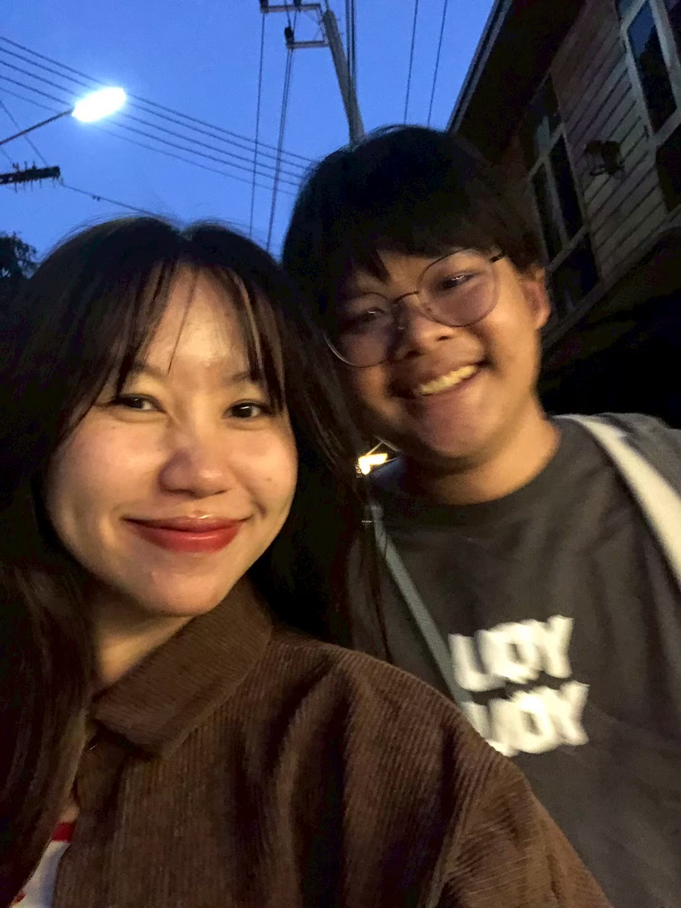
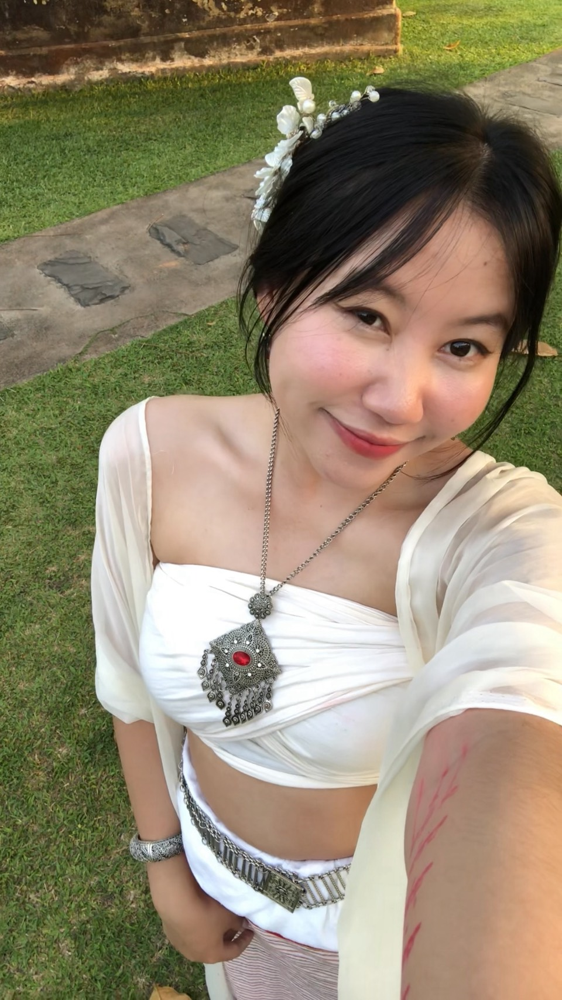
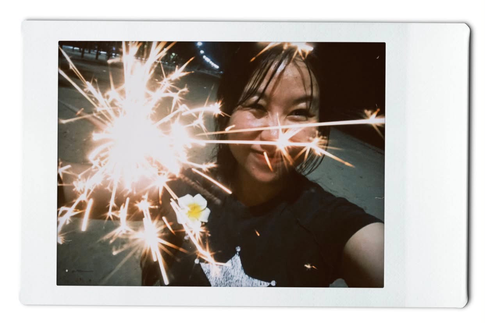

Happy Anniversary 🎉
ขอบคุณที่อยู่ด้วยกันมานะคับ เค้าดีใจมากที่มีคุณอยู่ด้วยถึงทุกวันนี้ เค้ารู้สึกดีทุกๆ ครั้งเลยที่มีแฟนอยู่ข้างๆ ตอนเค้าซึมๆ ก็มีแฟนคอยปลอบ รักแฟนนะคับ🫶
ปล.สุขสันต์วันครบรอบน้าแมวส้ม❤️🐈
บันทึกเรื่องราวการเดินทางของเราสองคน

กดดูเมนูด้านล่างได้เลยนะค้าบ
ขอบคุณที่อยู่ด้วยกันมานะคับ เค้าดีใจมากที่มีคุณอยู่ด้วยถึงทุกวันนี้ เค้ารู้สึกดีทุกๆ ครั้งเลยที่มีแฟนอยู่ข้างๆ ตอนเค้าซึมๆ ก็มีแฟนคอยปลอบ รักแฟนนะคับ🫶
ปล.สุขสันต์วันครบรอบน้าแมวส้ม❤️🐈
Every photo tells our story ✨


...and counting every beautiful moment together ❤️
I Wanna Be Yours - Arctic Monkeys